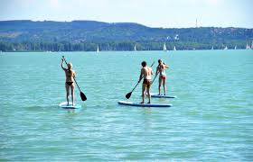
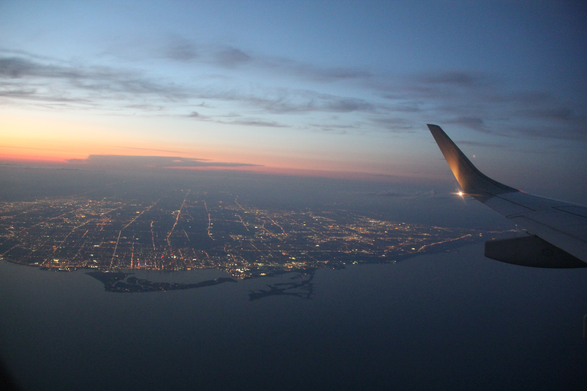
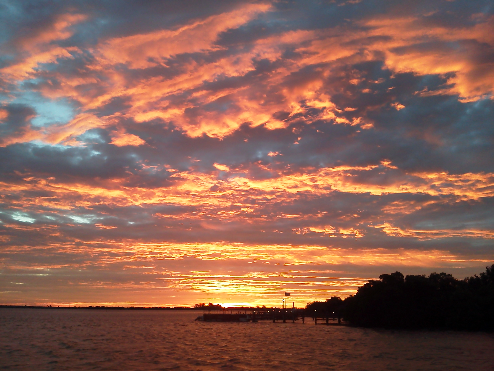

I love to paddle board in the summer with friends and family. My sister and I ESPECIALLY ENJOY going out on the lake in New Jersey for the sunrise. It's perfect for a nice summer activity!
Traveling

I LOVE traveling around the world. When I am older, I hope to go on many trips around the globe to see and experience new and exciting things. My favorite way to travel is by airplane because of all the amazing views, especially over water!
Sunrises

My favorite way to start my day is by watching the sunrise. Almost every morning in the summer I watch the sunrise over the ocean. It is a GREAT way to relax and have your day off to a great start.